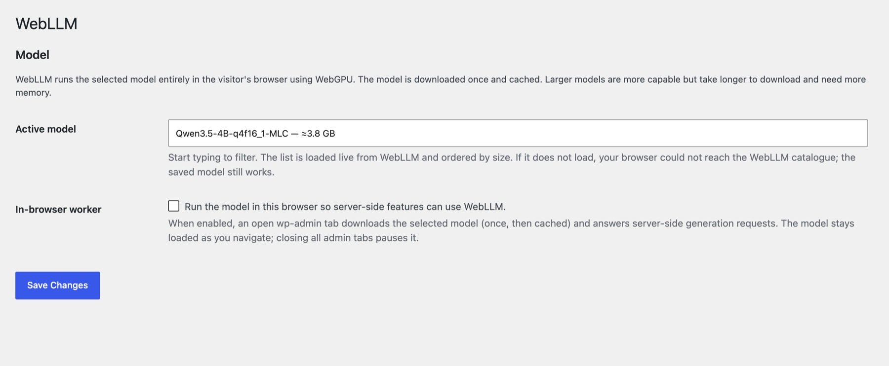

Private AI with WebLLM
Helpdesk Hero's AI features (the customer's writing assistant, and AI triage and reply drafts in Pro) use whatever AI provider your site has. You don't need a cloud AI account: AI Provider for WebLLM runs a language model inside your own browser.
- No API key and no bill. The model runs on your computer's graphics chip (WebGPU).
- Private. Prompts and answers stay in your browser and your site. Nothing is sent to an AI company.
- Free and open source (GPL), created by Joost de Valk and published by Progress Planner. Helpdesk Hero isn't affiliated with it; we recommend it because it fits how we think AI should work in WordPress.
Project page: github.com/ProgressPlanner/ai-provider-for-webllm
What you need#
- WordPress 7.0 or newer (it uses the AI Client built into WordPress 7.0).
- HTTPS (or
localhoston a development site). Browsers only allow WebGPU on secure pages. - A browser with WebGPU: recent Chrome or Edge on desktop work best.
- Space and memory for the model. Models download once (from a few hundred MB to a few GB, depending on the model) and are then cached by the browser. Smaller models are faster and lighter.
1. Download#
The plugin isn't on WordPress.org yet, so you download it from GitHub:
- Open the project on GitHub.
- Click the green Code button, then Download ZIP. You get a file such as
ai-provider-for-webllm-main.zip. Don't unzip it.
2. Install and activate#
- In your WordPress dashboard, go to Plugins → Add New → Upload Plugin.
- Choose the zip you downloaded and click Install Now.
- Click Activate Plugin.
On a support hub, install it on the hub site. On a customer site, the site owner installs it there for the writing assistant.
Multisite: WebLLM's settings are per site. Network-activating the plugin isn't enough: on each site that uses AI (for example the customer site in the Helpdesk Hero demo), open that site's Settings → WebLLM, choose a model and turn on the worker.
3. Choose a model and turn on the worker#
- Go to Settings → WebLLM.
- Pick a Model. The list comes from WebLLM's catalogue and shows each model's download size. Start with a small one, around 1 GB or less (for example a 0.5B–1B model such as Qwen2.5-0.5B-Instruct or Llama-3.2-1B-Instruct). The default, Qwen3.5-4B (about 3.8 GB), gives better answers but takes much longer to download and load, and needs a powerful computer. You can switch later.
- Turn on In-browser worker. Helpdesk Hero needs this: its AI requests start on your server, and the worker lets an open dashboard tab answer them.
- Click Save Changes.

The first time a model is used, your browser downloads it. Keep the tab open until it's done; it's cached after that.
4. Check that it works#
- Stay on Settings → WebLLM. The status line should read WebLLM worker: ready (after loading model… the first time). If it says unavailable, see Troubleshooting.
- On a support hub (Pro): open Support Hub → Pro. The AI triage card no longer asks you to connect a provider. Open any ticket and click Write it in the AI triage card. A brief appears after a few seconds (longer the first time, while the model loads).
- On a customer site: open the help center's New ticket screen. Help me describe this appears under the description when your support team's policy allows the writing assistant.
Helpdesk Hero also tells you what's missing: if the plugin is installed but not active, or active with the worker off, a note says so where the AI features are.
How it behaves#
- Keep a dashboard tab open while you use AI features. With no tab open, there's no browser to run the model, and requests wait and then time out.
- Wait for “ready”. The model loads into each dashboard page you open (from the browser's cache after the first time). Requests made before it finishes loading fail with a message asking you to wait; try again once WebLLM worker: ready shows. Small models load in seconds.
- No background AI. Scheduled tasks (cron) and WP-CLI have no browser, so with WebLLM active, Pro doesn't write triage briefs automatically when tickets arrive. Open the ticket and click Write it instead.
- Speed depends on your computer. A laptop with a recent graphics chip answers a short brief in seconds; older machines take longer. Smaller models help.
Troubleshooting#
| What you see | What to do |
|---|---|
| unavailable — needs a secure context | Use your site's https:// address. On a development site, localhost works too. |
| unavailable — WebGPU is not available | Use a recent Chrome or Edge on a desktop computer, and make sure hardware acceleration is on in the browser's settings. |
| error: … while loading a model | The download was interrupted or the device ran out of memory. Reload the page, or choose a smaller model. |
| AI features still say no provider is connected | Check that the plugin is active, a model is saved, and In-browser worker is on. Then reload the Helpdesk Hero screen. |
| The local AI model (…) isn't ready in your browser yet (or WebLLM's No WebLLM worker is connected for model …) | The model is still downloading or loading. Stay on the page until Settings → WebLLM shows WebLLM worker: ready, then retry. If it never gets there, choose a smaller model. On multisite, set up WebLLM on the site you're using. |
| Requests time out | Keep a dashboard tab open and wait for WebLLM worker: ready. Very slow devices may need a smaller model. |
| It doesn't work in the live demo | The demo runs WordPress inside your browser; a model of several GB on top of that often runs out of memory. Use a small model, or try WebLLM on your own site. |
For problems with WebLLM itself, see the project's support page.
Credits#
AI Provider for WebLLM was created by Joost de Valk, is published by Progress Planner, and is released under the GPL. It runs models with WebLLM by the MLC AI project. Thank you to both.
Still stuck? Check Troubleshooting and the FAQ, or ask on GitHub. You can also try everything in the live demo.